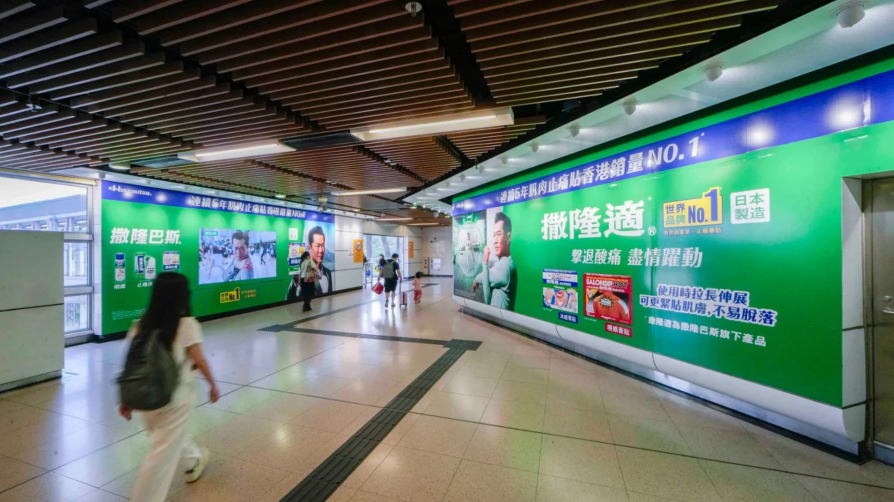
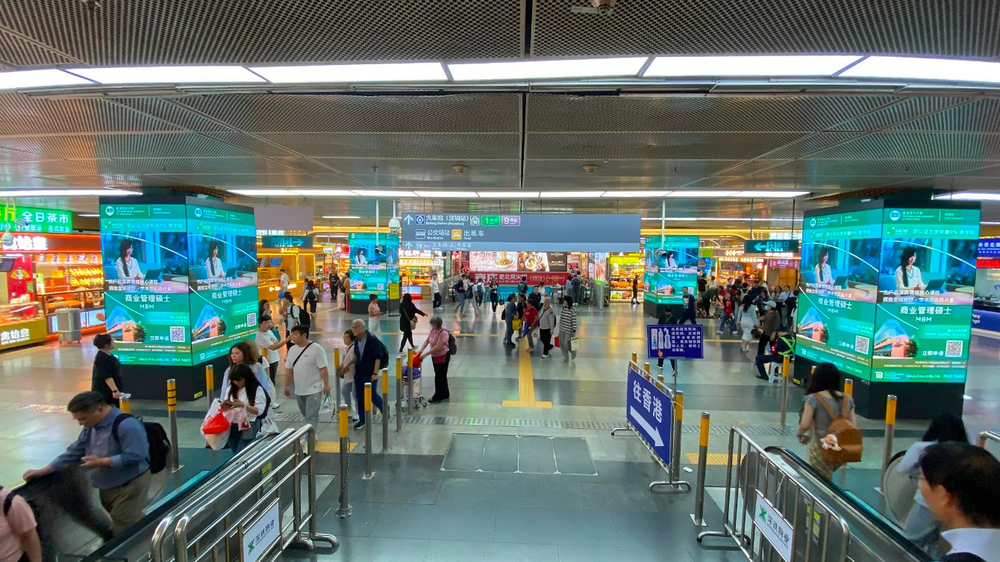
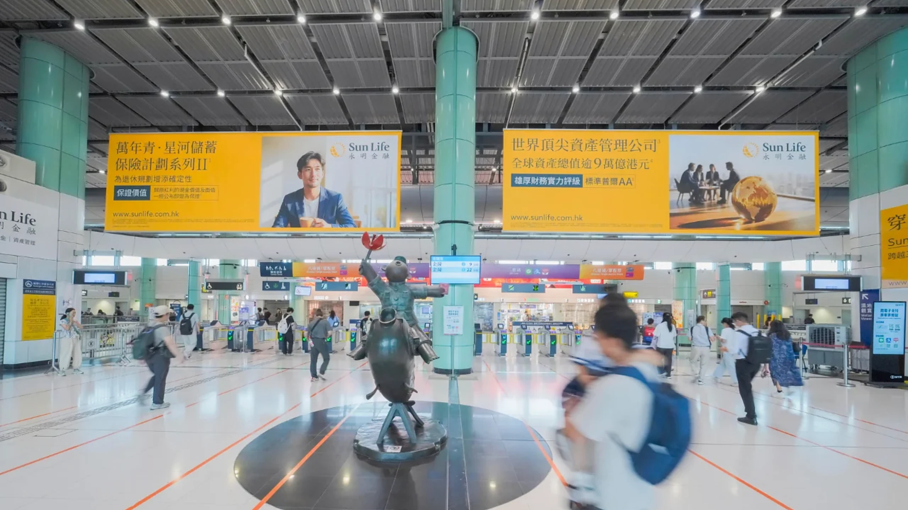
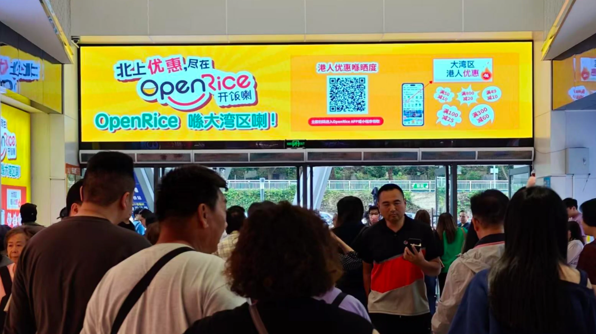
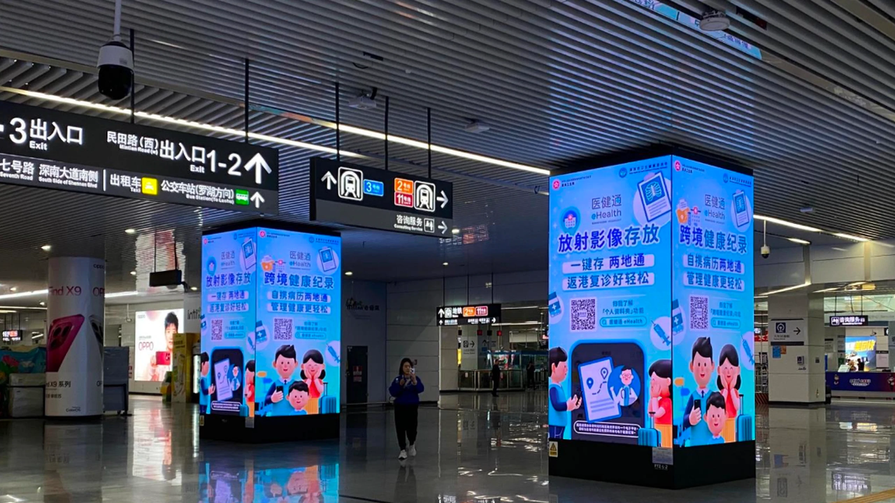

羅湖口岸
Lo Wu
羅湖連接香港東鐵綫與深圳羅湖站區。可按香港站區、旅客通道及深圳一側的媒體位置規劃跨境推廣。
約17.55萬2024 年平均每日過境人次（雙向）資料來源：運輸署，Fact Sheet on Transport（2025年7月）過境人次為雙向旅客統計，並非廣告曝光量。

CROSS-BORDER MEDIA
由羅湖至深圳灣等主要跨境口岸，探索旅客通道、站區及交通接駁的廣告機會。
BORDER LOCATIONS






Lo Wu
羅湖連接香港東鐵綫與深圳羅湖站區。可按香港站區、旅客通道及深圳一側的媒體位置規劃跨境推廣。
Lok Ma Chau
落馬洲支線與福田口岸連接香港及深圳鐵路網絡，可按旅客通行動線選擇站區及交通接駁媒體。
Other Border Crossings
透過不同陸路口岸的燈箱、數碼屏幕及大型廣告空間，接觸往返香港與內地的跨境旅客。可按目標區域查詢蓮塘／香園圍、福田、深圳灣及皇崗等口岸的媒體位置。
投放考慮因素
口岸選擇 · 廣告位置 · 展示規模 · 投放週期